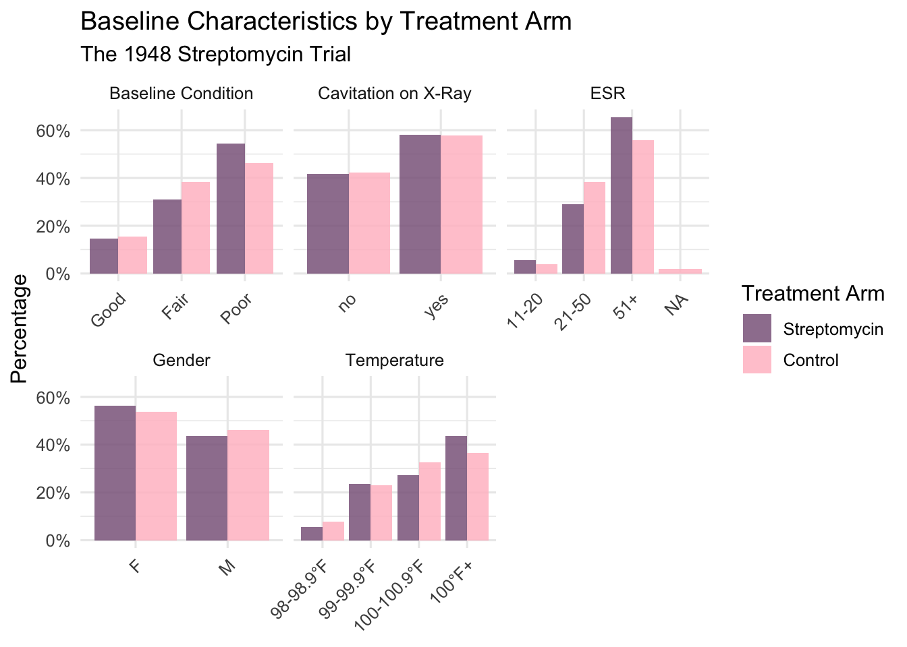
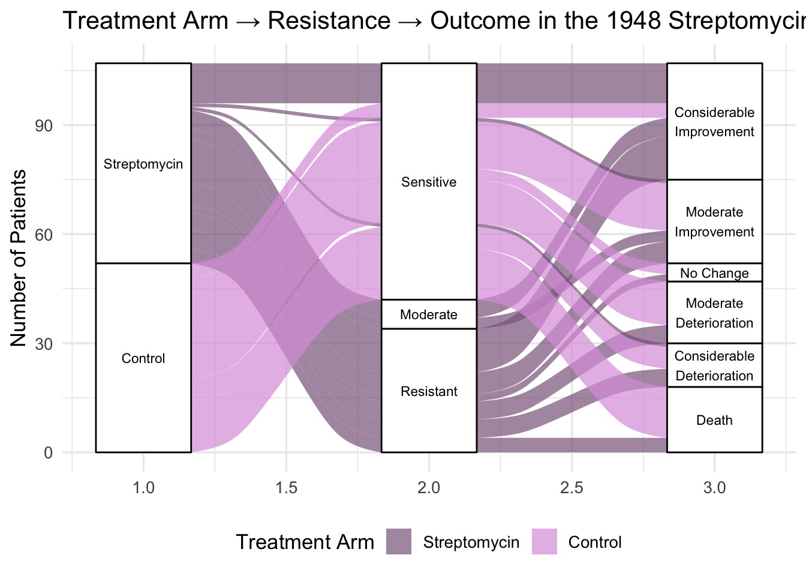
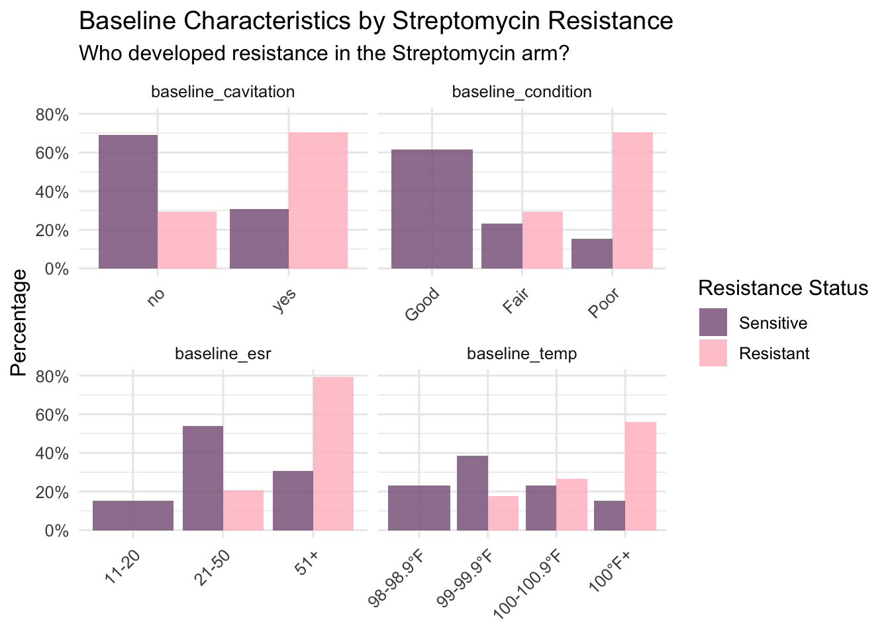
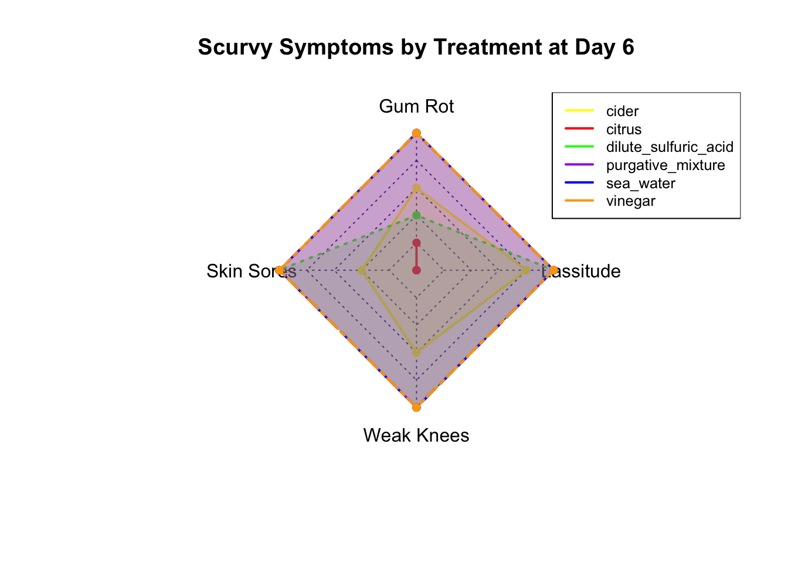
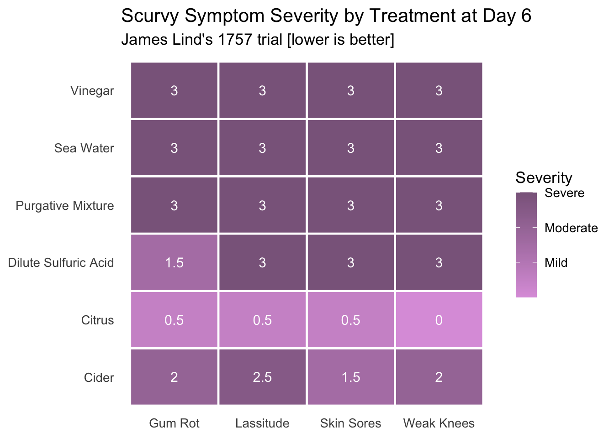
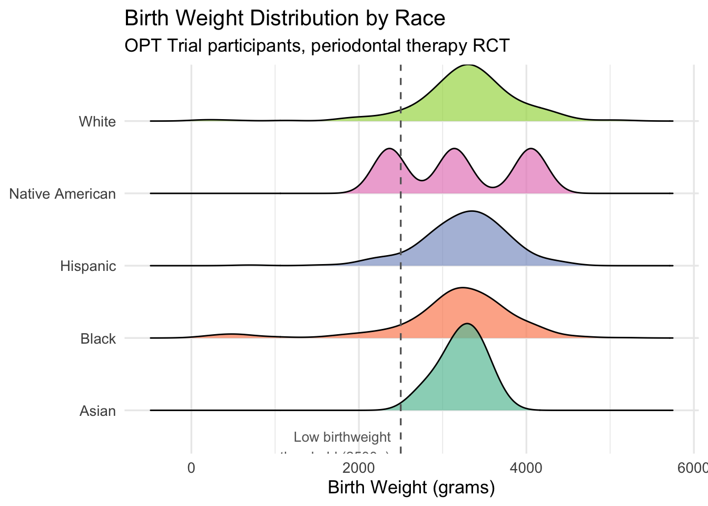
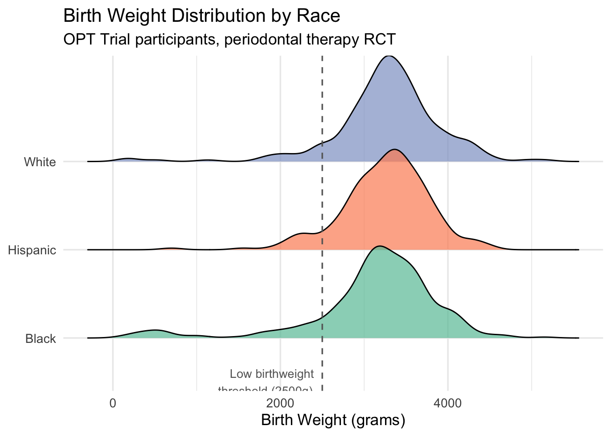
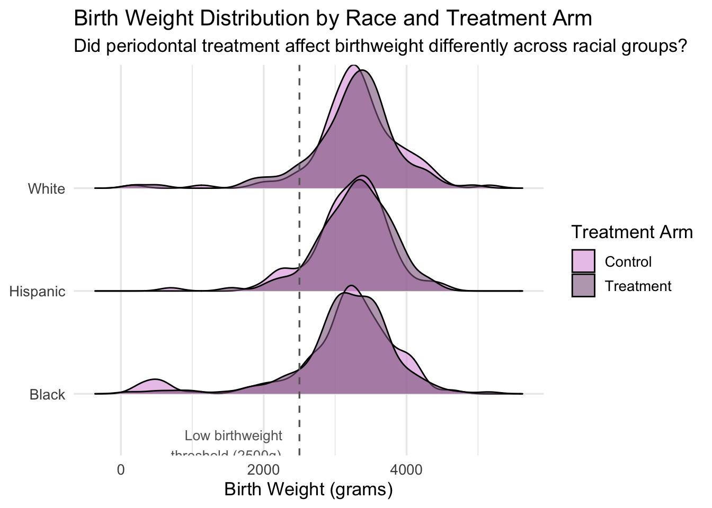
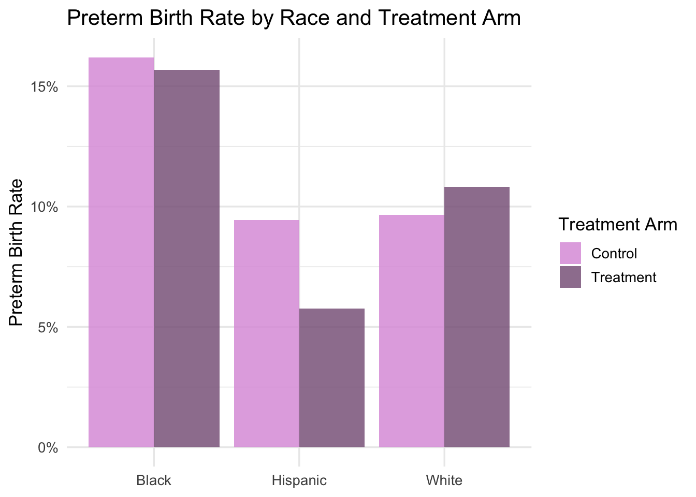

I am interested in working in RCTs in the future, so I wanted to test out data visualization techniques that work well with two-arm trials. Alluvial diagrams are great for tracing patient flow through a trial and showing how individuals move from treatment assignment through intermediate outcomes to final results in a single graphic. For this piece I used the 1948 Streptomycin Trial, one of the first modern randomized controlled trials ever conducted, to explore both the overall treatment effect and who developed antibiotic resistance.
Source: medicaldata package, strep_tb data
data(strep_tb)
glimpse(strep_tb)## Rows: 107
## Columns: 13
## $ patient_id <chr> "0001", "0002", "0003", "0004", "0005", "0006", "0…
## $ arm <fct> Control, Control, Control, Control, Control, Contr…
## $ dose_strep_g <dbl> 0, 0, 0, 0, 0, 0, 0, 0, 0, 0, 0, 0, 0, 0, 0, 0, 0,…
## $ dose_PAS_g <dbl> 0, 0, 0, 0, 0, 0, 0, 0, 0, 0, 0, 0, 0, 0, 0, 0, 0,…
## $ gender <fct> M, F, F, M, F, M, F, M, F, M, F, M, F, M, F, M, F,…
## $ baseline_condition <fct> 1_Good, 1_Good, 1_Good, 1_Good, 1_Good, 1_Good, 1_…
## $ baseline_temp <fct> 1_98-98.9F, 3_100-100.9F, 1_98-98.9F, 1_98-98.9F, …
## $ baseline_esr <fct> 2_11-20, 2_11-20, 3_21-50, 3_21-50, 3_21-50, 3_21-…
## $ baseline_cavitation <fct> yes, no, no, no, no, no, yes, yes, yes, yes, no, y…
## $ strep_resistance <fct> 1_sens_0-8, 1_sens_0-8, 1_sens_0-8, 1_sens_0-8, 1_…
## $ radiologic_6m <fct> 6_Considerable_improvement, 5_Moderate_improvement…
## $ rad_num <dbl> 6, 5, 5, 5, 5, 6, 5, 5, 5, 5, 6, 5, 5, 5, 5, 6, 5,…
## $ improved <lgl> TRUE, TRUE, TRUE, TRUE, TRUE, TRUE, TRUE, TRUE, TR…# data cleaning
strep_clean <- strep_tb %>%
mutate(
strep_resistance = recode(strep_resistance,
"1_sens_0-8" = "Sensitive",
"2_mod_8-99" = "Moderate",
"3_resist_100+" = "Resistant"
),
radiologic_6m = recode(radiologic_6m,
"1_Death" = "Death",
"2_Considerable_deterioration" = "Considerable\nDeterioration",
"3_Moderate_deterioration" = "Moderate\nDeterioration",
"4_No_change" = "No Change",
"5_Moderate_improvement" = "Moderate\nImprovement",
"6_Considerable_improvement" = "Considerable\nImprovement"
),
baseline_condition = recode(baseline_condition,
"1_Good" = "Good",
"2_Fair" = "Fair",
"3_Poor" = "Poor"
),
baseline_temp = recode(baseline_temp,
"1_98-98.9F" = "98-98.9°F",
"2_99-99.9F" = "99-99.9°F",
"3_100-100.9F" = "100-100.9°F",
"4_100F+" = "100°F+"
),
baseline_esr = recode(baseline_esr,
"1_0-10" = "0-10",
"2_11-20" = "11-20",
"3_21-50" = "21-50",
"4_51+" = "51+"
),
baseline_cavitation = recode(baseline_cavitation,
"0_no" = "No",
"1_yes" = "Yes"
)
)The arms look well balanced across all characteristics given this was 1948 and randomization methods were primitive. Gender, baseline condition, cavitation, ESR all roughly equal between groups. One might notice a slight imbalance in that the streptomycin arm has slightly more patients in the highest fever category (100F+) than control.
strep_table1 <- strep_clean %>%
select(arm, gender, baseline_condition, baseline_temp, baseline_esr, baseline_cavitation) %>%
rename(
"Gender" = gender,
"Baseline Condition" = baseline_condition,
"Temperature" = baseline_temp,
"ESR" = baseline_esr,
"Cavitation on X-Ray" = baseline_cavitation
) %>%
pivot_longer(cols = -arm, names_to = "variable", values_to = "value") %>%
count(arm, variable, value) %>%
group_by(arm, variable) %>%
mutate(pct = n / sum(n))
ggplot(strep_table1, aes(x = value, y = pct, fill = arm)) +
geom_col(position = "dodge", alpha = 0.85) +
facet_wrap(~variable, scales = "free_x") +
scale_y_continuous(labels = scales::percent) +
scale_fill_manual(values = c("Streptomycin" = "plum4", "Control" = "pink")) +
labs(
title = "Baseline Characteristics by Treatment Arm",
subtitle = "The 1948 Streptomycin Trial",
x = NULL,
y = "Percentage",
fill = "Treatment Arm"
) +
theme_minimal(base_size = 12) +
theme(axis.text.x = element_text(angle = 45, hjust = 1))
strep_clean %>%
group_by(arm, strep_resistance, radiologic_6m) %>%
summarise(freq = n(), .groups = "drop") %>%
ggplot(aes(axis1 = arm,
axis2 = strep_resistance,
axis3 = radiologic_6m,
y = freq)) +
geom_alluvium(aes(fill = arm), alpha = 0.7) +
geom_stratum() +
geom_text(stat = "stratum", aes(label = after_stat(stratum)), size = 3) +
scale_fill_manual(values = c("Streptomycin" = "plum4", "Control" = "plum")) +
labs(
title = "Treatment Arm → Resistance → Outcome in the 1948 Streptomycin Trial",
y = "Number of Patients",
fill = "Treatment Arm"
) +
theme_minimal(base_size = 13) +
theme(legend.position = "bottom")
Streptomycin dominates the top outcomes (considerable improvement) while the control flows heavily toward death and deterioration. The historical finding was that all the resistance flows from the streptomycin arm only.
Based on the plot below, resistance was not randomly distributed among streptomycin-treated patients. Those who developed resistance were disproportionately in poor baseline condition and more likely to present with cavitation on their chest X-ray which are indicators of more advanced disease. Higher ESR and fever followed the same pattern.
This interpretation was confirmed by follow-up analyses. Patients who developed resistance were more likely to present with cavitation (χ²(1) = 4.65, p = .031) and poor baseline condition (Fisher’s exact, p < .001) at enrollment. This suggests that higher disease severity may have given the bacterium more opportunity to mutate. This pattern remains relevant today, where the most vulnerable patients are often the most likely to develop antibiotic resistance
strep_resist <- strep_clean %>%
filter(arm == "Streptomycin") %>%
filter(strep_resistance != "Moderate") # only 8 moderate cases, too few to compare
table(strep_resist$strep_resistance)##
## Sensitive Moderate Resistant
## 13 0 34strep_resist %>%
select(strep_resistance, baseline_condition, baseline_temp,
baseline_esr, baseline_cavitation) %>%
pivot_longer(cols = -strep_resistance,
names_to = "variable",
values_to = "value") %>%
count(strep_resistance, variable, value) %>%
group_by(strep_resistance, variable) %>%
mutate(pct = n / sum(n)) %>%
ggplot(aes(x = value, y = pct, fill = strep_resistance)) +
geom_col(position = "dodge", alpha = 0.85) +
facet_wrap(~variable, scales = "free_x", nrow = 2) +
scale_y_continuous(labels = scales::percent) +
scale_fill_manual(values = c("Sensitive" = "plum4", "Resistant" = "pink")) +
labs(
title = "Baseline Characteristics by Streptomycin Resistance",
subtitle = "Who developed resistance in the Streptomycin arm?",
x = NULL,
y = "Percentage",
fill = "Resistance Status"
) +
theme_minimal(base_size = 12) +
theme(axis.text.x = element_text(angle = 45, hjust = 1))
# follow up chi square test for cavitation
strep_resist_binary <- strep_clean %>%
filter(arm == "Streptomycin") %>%
filter(strep_resistance %in% c("Sensitive", "Resistant")) %>%
mutate(strep_resistance = droplevels(strep_resistance))
chisq.test(table(strep_resist_binary$baseline_cavitation,
strep_resist_binary$strep_resistance))##
## Pearson's Chi-squared test with Yates' continuity correction
##
## data: table(strep_resist_binary$baseline_cavitation, strep_resist_binary$strep_resistance)
## X-squared = 4.6484, df = 1, p-value = 0.03108# fisher for baseline condition
fisher.test(table(strep_resist_binary$baseline_condition,
strep_resist_binary$strep_resistance))##
## Fisher's Exact Test for Count Data
##
## data: table(strep_resist_binary$baseline_condition, strep_resist_binary$strep_resistance)
## p-value = 3.005e-06
## alternative hypothesis: two.sidedThe scurvy dataset from the medicaldata
package contains results from James Lind’s 1757 trial testing six
treatments for scurvy in 12 sailors. . I was drawn to it as a natural
companion to the streptomycin piece since both are landmark historical
trials that changed medicine, and both reward careful visualization
despite their small sample sizes.
data(scurvy)
glimpse(scurvy)## Rows: 12
## Columns: 8
## $ study_id <chr> "001", "002", "003", "004", "005", "006", "0…
## $ treatment <fct> cider, cider, dilute_sulfuric_acid, dilute_s…
## $ dosing_regimen_for_scurvy <chr> "1 quart per day", "1 quart per day", "25 dr…
## $ gum_rot_d6 <fct> 2_moderate, 2_moderate, 1_mild, 2_moderate, …
## $ skin_sores_d6 <fct> 2_moderate, 1_mild, 3_severe, 3_severe, 3_se…
## $ weakness_of_the_knees_d6 <fct> 2_moderate, 2_moderate, 3_severe, 3_severe, …
## $ lassitude_d6 <fct> 2_moderate, 3_severe, 3_severe, 3_severe, 3_…
## $ fit_for_duty_d6 <fct> 0_no, 0_no, 0_no, 0_no, 0_no, 0_no, 0_no, 0_…radar_data <- scurvy %>%
mutate(across(c(gum_rot_d6, skin_sores_d6, weakness_of_the_knees_d6, lassitude_d6),
~ as.numeric(str_extract(as.character(.), "\\d")))) %>%
group_by(treatment) %>%
summarise(across(c(gum_rot_d6, skin_sores_d6, weakness_of_the_knees_d6, lassitude_d6), mean)) %>%
column_to_rownames("treatment")
# fmsb set up
radar_data <- rbind(
max = rep(3, 4),
min = rep(1, 4),
radar_data
)
colnames(radar_data) <- c("Gum Rot", "Skin Sores", "Weak Knees", "Lassitude")Since there are quite a few groups, it is difficult to read at first. Upon closer inspection though, one can see that citrus, in red, is at the center of the plot compared to all other treatments (and colors).
colors <- c("yellow", "red", "green", "purple", "blue", "orange")
radarchart(radar_data,
pcol = colors,
pfcol = scales::alpha(colors, 0.2),
plwd = 2,
title = "Scurvy Symptoms by Treatment at Day 6"
)
legend("topright", legend = rownames(radar_data)[3:8],
col = colors, lty = 1, lwd = 2, cex = 0.8)
The heatmap better displays the stark difference in symptoms for citrus compared to the other treatments.
scurvy_heat <- scurvy %>%
mutate(across(c(gum_rot_d6, skin_sores_d6, weakness_of_the_knees_d6, lassitude_d6),
~ as.numeric(str_extract(as.character(.), "\\d")))) %>%
group_by(treatment) %>%
summarise(across(c(gum_rot_d6, skin_sores_d6, weakness_of_the_knees_d6, lassitude_d6), mean)) %>%
pivot_longer(cols = -treatment, names_to = "symptom", values_to = "severity") %>%
mutate(
symptom = recode(symptom,
"gum_rot_d6" = "Gum Rot",
"skin_sores_d6" = "Skin Sores",
"weakness_of_the_knees_d6" = "Weak Knees",
"lassitude_d6" = "Lassitude"
),
treatment = recode(treatment,
"citrus" = "Citrus",
"cider" = "Cider",
"dilute_sulfuric_acid" = "Dilute Sulfuric Acid",
"vinegar" = "Vinegar",
"purgative_mixture" = "Purgative Mixture",
"sea_water" = "Sea Water"
)
)
ggplot(scurvy_heat, aes(x = symptom, y = treatment, fill = severity)) +
geom_tile(color = "white", linewidth = 0.8) +
geom_text(aes(label = round(severity, 1)), color = "white", size = 4) +
scale_fill_gradient(low = "plum", high = "plum4",
name = "Severity",
breaks = c(1, 2, 3),
labels = c("Mild", "Moderate", "Severe")) +
labs(
title = "Scurvy Symptom Severity by Treatment at Day 6",
subtitle = "James Lind's 1757 trial [lower is better]",
x = NULL,
y = NULL
) +
theme_minimal(base_size = 13) +
theme(panel.grid = element_blank())
James Lind’s 1757 trial tested six treatments for scurvy aboard a Royal Navy vessel. The results are clearly unambiguous; citrus alone produced meaningful symptom relief across all four measures by day 6, while every other treatment left patients severely symptomatic.
Finally, I wanted to visualize a modern RCT using the OPT dataset, a trial examining whether treating maternal periodontal disease could reduce preterm birth risk. Given my interest in health equity, I was particularly curious whether treatment effects and birth outcomes differed by racial group.
Source: medicaldata package, opt data
Michalowicz et al., ‘Treatment of periodontal disease and the risk of preterm birth’, N Engl J Med 2006; 355:1885-1894. DOI: 10.1056/NEJMoa062249
data(opt)
head(opt)## PID Clinic Group Age Black White Nat.Am Asian Hisp Education Public.Asstce
## 1 100034 NY C 25 Yes No No No 8-12 yrs No
## 2 100042 NY C 21 Yes No No No 8-12 yrs Yes
## 3 100067 NY T 25 No Yes No No Yes 8-12 yrs No
## 4 100083 NY C 36 Yes No No No MT 12 yrs Yes
## 5 100091 NY C 21 No Yes No No Yes 8-12 yrs No
## 6 100109 NY T 40 No No No Yes 8-12 yrs No
## Hypertension Diabetes BL.Diab.Type BMI Use.Tob BL.Cig.Day Use.Alc BL.Drks.Day
## 1 N No <NA> NA Yes 5 No NA
## 2 N No <NA> 21 No NA No NA
## 3 N No <NA> 24 No NA No NA
## 4 N No <NA> 36 No NA No NA
## 5 N No <NA> 27 No NA No NA
## 6 N No <NA> 24 No NA No NA
## Drug.Add Prev.preg N.prev.preg Live.PTB Any.stillbirth Spont.ab Induced.ab
## 1 No No NA <NA> <NA> <NA> <NA>
## 2 No Yes 5 Yes No No Yes
## 3 No Yes 2 Yes No
## 4 No Yes 4 No No Yes Yes
## 5 No No NA <NA> <NA> <NA> <NA>
## 6 No No NA <NA> <NA> <NA> <NA>
## Any.live.ptb.sb.sp.ab.in.ab N.living.kids Tx.comp. Local.anes Topical.Anest
## 1 <NA> NA <NA> <NA> <NA>
## 2 Yes 2 <NA> <NA> <NA>
## 3 Yes 1 Und No No
## 4 Yes 2 <NA> <NA> <NA>
## 5 <NA> NA <NA> <NA> <NA>
## 6 <NA> NA Und No Yes
## Tx.time EDC.necessary. Completed.EDC N.extractions N.perm.restorations
## 1 NA No <NA> NA NA
## 2 NA NA NA
## 3 1.000000 Yes Yes 0 1
## 4 NA No <NA> NA NA
## 5 NA Yes Yes 0 1
## 6 1.666667 NA NA
## N.qualifying.teeth BL.GE BL..BOP BL.PD.avg BL..PD.4 BL..PD.5 BL.CAL.avg
## 1 13 1.429 48.214 2.696 17.857 5.357 1.291
## 2 12 1.298 79.762 2.685 17.857 10.119 1.119
## 3 16 1.784 80.247 2.821 25.309 12.346 1.407
## 4 15 1.596 100.000 2.814 17.308 5.769 1.494
## 5 16 1.173 94.048 2.768 23.214 14.286 1.327
## 6 16 0.969 85.185 2.932 25.309 10.494 1.432
## BL..CAL.2 BL..CAL.3 BL.Calc.I BL.Pl.I V3.GE V3..BOP V3.PD.avg V3..PD.4
## 1 38.182 5.455 1.028 1.583 1.637 88.690 3.000 27.381
## 2 25.000 10.119 0.861 1.194 NA NA NA NA
## 3 42.593 16.049 0.972 0.917 NA NA NA NA
## 4 38.312 13.636 2.083 2.028 1.000 99.359 3.660 49.359
## 5 40.476 14.286 1.111 1.083 1.762 72.619 2.744 23.214
## 6 45.679 11.728 0.194 0.611 NA NA NA NA
## V3..PD.5 V3.CAL.avg V3..CAL.2 V3..CAL.3 V3.Calc.I V3.Pl.I V5.GE V5..BOP
## 1 13.095 1.557 46.108 17.365 1.111 0.917 2.077 86.310
## 2 NA NA NA NA NA NA NA NA
## 3 NA NA NA NA NA NA NA NA
## 4 26.923 2.282 79.487 39.103 1.778 1.111 1.000 99.359
## 5 13.095 1.280 38.690 13.095 0.806 0.778 1.845 56.548
## 6 NA NA NA NA NA NA NA NA
## V5.PD.avg V5..PD.4 V5..PD.5 V5.CAL.avg V5..CAL.2 V5..CAL.3 V5.Calc.I V5.Pl.I
## 1 2.929 23.214 11.310 1.500 44.643 13.095 1.111 1.639
## 2 NA NA NA NA NA NA NA NA
## 3 NA NA NA NA NA NA NA NA
## 4 3.660 49.359 26.923 2.282 79.487 39.103 1.778 1.111
## 5 2.786 22.024 13.690 1.321 44.048 13.690 1.000 1.250
## 6 NA NA NA NA NA NA NA NA
## N.PAL.sites Birth.outcome Preg.ended...37.wk GA.at.outcome Birthweight
## 1 0 Live birth No 265 3490
## 2 0 Live birth Yes 253 2350
## 3 0 Live birth No 266 2525
## 4 8 Live birth No 271 3650
## 5 0 Live birth No 280 3865
## 6 0 Live birth No 275 3120
## Fetal.congenital.anomaly Apgar1 Apgar5 Any.SAE. GA...1st.SAE Bact.vag
## 1 No 9 9 No 259 No
## 2 No 4 7 No 259 No
## 3 No 8 9 No 259 No
## 4 No 9 9 No 259 No
## 5 No 9 9 No 259 No
## 6 No 8 9 No 259 No
## Gest.diab Oligo Polyhyd Gonorrhea Chlamydia Strep.B Traumatic.Inj UTI
## 1 Yes No No No No
## 2 No No No No Yes No No
## 3 Yes Yes No No No
## 4 No No No No No
## 5 No No No No No No No
## 6 No No No No No Yes No No
## Pre.eclamp Mom.HIV.status BL.Anti.inf BL.Cortico BL.Antibio BL.Bac.vag
## 1 No No 0 0 0 0
## 2 No No 0 0 0 0
## 3 No No 0 0 0 0
## 4 No No 1 0 0 0
## 5 No No 0 0 0 0
## 6 No No 0 0 0 0
## V3.Anti.inf V3.Cortico V3.Antibio V3.Bac.vag V5.Anti.inf V5.Cortico
## 1 0 0 0 0 0 0
## 2 NA NA NA NA NA NA
## 3 NA NA NA NA NA NA
## 4 1 0 0 0 0 0
## 5 0 0 0 0 NA NA
## 6 NA NA NA NA NA NA
## V5.Antibio V5.Bac.vag X..Vis.Att X..Vis.Elig X1st.Miss.Vis OAA1 OCR1 OFN1
## 1 0 0 5 5 100 6.745 5.476 3.816
## 2 NA NA 0 5 2 13.281 4.597 3.525
## 3 NA NA 2 5 3 16.17 6.077 4.462
## 4 0 0 3 5 2 8.795 8.197 4.847
## 5 NA NA 4 5 5 6.663 6.302 5.238
## 6 NA NA 1 5 3 5.694 6.297 4.646
## OPG1 OPI1 OTD1 OTF1 OCRP1 O1B1 O61 O81 OPGE21 OTNF1 OMMP91
## 1 16.72 3.599 5.909 7.056 18.331 1.2 4.9 1.2 103.631 1.2 2.312
## 2 3.894 2.677 5.408 6.388 6.929 1.2 4.9 1.2 138.577 1.2 1.755
## 3 16.164 2.985 5.803 5.893 2.813 1.2 101.36 1.2 189.849 1.2 1.561
## 4 18.257 9.439 3.975 4.847 31.5 1.2 4.9 1.2 114.965 1.32 0.883
## 5 10.935 4.119 2.17 5.6 1.026 1.2 4.9 1.2 264.073 1.2 0.452
## 6 5.035 5.094 2.771 8.916 3.596 1.2 4.9 1.2 61.821 1.2 0.29
## ETXU_CAT1 OFIBRIN1 OAA5 OCR5 OFN5 OPG5 OPI5 OTD5 OTF5 OCRP5 O1B5 O65
## 1 1 9.3 8.264 1.63 2.301 15.682 4.119 5.894 7.27 7.012 1.2 4.9
## 2 2 11.148 . . . . . . . . . .
## 3 2 20 . . . . . . . . . .
## 4 2 16.096 2.534 4.2 2.767 19.636 9.584 3.252 5.691 7.848 1.2 4.9
## 5 1 9.668 4.299 2.083 1.279 8.567 2.463 1.716 2.831 2.76 1.2 4.9
## 6 2 11.526 . . . . . . . . . .
## O85 OPGE25 OTNF5 OMMP95 ETXU_CAT5 OFIBRIN5 BL.DNA BL.Univ BL.AA BL.PG
## 1 1.2 836.57 1.2 1.126 1 58.4 NA NA NA NA
## 2 . . . . . . 1804.65 135000000 12500 0
## 3 . . . . . . 1198.60 307000000 0 9310000
## 4 1.2 252.26 1.2 0.428 1 76 NA NA NA NA
## 5 1.2 1521.16 1.2 0.236 1 78 NA NA NA NA
## 6 . . . . . . NA NA NA NA
## BL.TD BL.TF BL.PI BL.CR BL.FN BL.S7 V5.DNA V5.Univ V5.AA V5.PG
## 1 NA NA NA NA NA NA NA NA NA NA
## 2 4480000 6460000 0 3730000 29900000 44600000 NA NA NA NA
## 3 5490000 3520000 9790000 5050000 38400000 71600000 NA NA NA NA
## 4 NA NA NA NA NA NA NA NA NA NA
## 5 NA NA NA NA NA NA NA NA NA NA
## 6 NA NA NA NA NA NA NA NA NA NA
## V5.TD V5.TF V5.PI V5.CR V5.FN V5.S7 BL..AA BL..PG BL..TD BL..TF BL..PI BL..CR
## 1 NA NA NA NA NA NA NA NA NA NA NA NA
## 2 NA NA NA NA NA NA 0.01 0.00 3.32 4.79 0.00 2.76
## 3 NA NA NA NA NA NA 0.00 3.03 1.79 1.15 3.19 1.64
## 4 NA NA NA NA NA NA NA NA NA NA NA NA
## 5 NA NA NA NA NA NA NA NA NA NA NA NA
## 6 NA NA NA NA NA NA NA NA NA NA NA NA
## BL..FN BL..S7 V5..AA V5..PG V5..TD V5..TF V5..PI V5..CR V5..FN V5..S7
## 1 NA NA NA NA NA NA NA NA NA NA
## 2 22.15 33.02 NA NA NA NA NA NA NA NA
## 3 12.51 23.31 NA NA NA NA NA NA NA NA
## 4 NA NA NA NA NA NA NA NA NA NA
## 5 NA NA NA NA NA NA NA NA NA NA
## 6 NA NA NA NA NA NA NA NA NA NAdim(opt)## [1] 823 171opt_race <- opt %>%
filter(!is.na(Birthweight)) %>%
mutate(race = case_when(
Black == "Yes" ~ "Black",
White == "Yes" ~ "White",
Hisp == "Yes" ~ "Hispanic",
Asian == "Yes" ~ "Asian",
Nat.Am == "Yes" ~ "Native American",
TRUE ~ "Other/Unknown"
)) %>%
filter(race != "Other/Unknown")
ggplot(opt_race, aes(x = Birthweight, y = race, fill = race)) +
geom_density_ridges(alpha = 0.7, scale = 1.2) +
geom_vline(xintercept = 2500, linetype = "dashed", color = "gray40") +
scale_fill_brewer(palette = "Set2") +
annotate("text", x = 2500, y = 0.5, label = "Low birthweight\nthreshold (2500g)",
hjust = 1.1, size = 3.5, color = "gray40") +
labs(
title = "Birth Weight Distribution by Race",
subtitle = "OPT Trial participants, periodontal therapy RCT",
x = "Birth Weight (grams)",
y = NULL
) +
theme_minimal(base_size = 13) +
theme(legend.position = "none")## Picking joint bandwidth of 196
The Native American distribution looked strange, so I checked the sample size before making any further inferences:
table(opt_race$race)##
## Asian Black Hispanic Native American White
## 7 364 210 3 225There are 7 Asian and 3 Native American participants. Those distributions are unreliable, so they have to be dropped.
opt_race <- opt_race %>%
filter(race %in% c("Black", "White", "Hispanic"))
ggplot(opt_race, aes(x = Birthweight, y = race, fill = race)) +
geom_density_ridges(alpha = 0.7, scale = 1.2) +
geom_vline(xintercept = 2500, linetype = "dashed", color = "gray40") +
scale_fill_brewer(palette = "Set2") +
annotate("text", x = 2500, y = 0.5, label = "Low birthweight\nthreshold (2500g)",
hjust = 1.1, size = 3.5, color = "gray40") +
labs(
title = "Birth Weight Distribution by Race",
subtitle = "OPT Trial participants, periodontal therapy RCT",
x = "Birth Weight (grams)",
y = NULL
) +
theme_minimal(base_size = 13) +
theme(legend.position = "none")## Picking joint bandwidth of 133
Did periodontal treatment affect birthweight differently across racial groups?
ggplot(opt_race, aes(x = Birthweight, y = race, fill = Group)) +
geom_density_ridges(alpha = 0.6, scale = 1.2) +
geom_vline(xintercept = 2500, linetype = "dashed", color = "gray40") +
scale_fill_manual(values = c("T" = "plum4", "C" = "plum"),
labels = c("T" = "Treatment", "C" = "Control")) +
annotate("text", x = 2400, y = 0.5, label = "Low birthweight\nthreshold (2500g)",
hjust = 1.1, size = 3.5, color = "gray40") +
labs(
title = "Birth Weight Distribution by Race and Treatment Arm",
subtitle = "Did periodontal treatment affect birthweight differently across racial groups?",
x = "Birth Weight (grams)",
y = NULL,
fill = "Treatment Arm"
) +
theme_minimal(base_size = 13)## Picking joint bandwidth of 154
Periodontal treatment did not meaningfully shift birthweight distributions within any racial group. The treatment and control curves overlap substantially for Black, Hispanic, and White participants alike. This confirms the trial’s published null finding that treating maternal periodontal disease did not reduce preterm birth or low birthweight risk regardless of race.
However the racial disparity in birthweight is clearly visible regardless of treatment arm. Black participants show a left-shifted distribution with more mass below the 2500g low birthweight threshold compared to White and Hispanic participants. Periodontal treatment did nothing to close that gap.
opt_race <- opt_race %>%
mutate(Preg.ended...37.wk = trimws(as.character(Preg.ended...37.wk)))
opt_race %>%
filter(Preg.ended...37.wk %in% c("Yes", "No")) %>%
group_by(race, Group, Preg.ended...37.wk) %>%
summarise(n = n(), .groups = "drop") %>%
group_by(race, Group) %>%
mutate(pct = n / sum(n)) %>%
filter(Preg.ended...37.wk == "Yes") %>%
ggplot(aes(x = race, y = pct, fill = Group)) +
geom_col(position = "dodge", alpha = 0.85) +
scale_fill_manual(values = c("T" = "plum4", "C" = "plum"),
labels = c("T" = "Treatment", "C" = "Control")) +
scale_y_continuous(labels = scales::percent) +
labs(
title = "Preterm Birth Rate by Race and Treatment Arm",
x = NULL,
y = "Preterm Birth Rate",
fill = "Treatment Arm"
) +
theme_minimal(base_size = 13)
Black participants had the highest preterm birth rates overall, and treatment made virtually no difference. Hispanic participants showed the largest gap between arms, with the treatment group having lower preterm birth rates, though small sample sizes make this hard to interpret confidently. White participants showed the opposite pattern, with slightly higher rates in the treatment arm.
The overall null finding might mask potential heterogeneity by race. The intervention may have had differential effects that were washed out in the aggregate analysis.
preterm_model <- glm(
(Preg.ended...37.wk == "Yes") ~ race * Group,
data = opt_race,
family = binomial
)
summary(preterm_model)##
## Call:
## glm(formula = (Preg.ended...37.wk == "Yes") ~ race * Group, family = binomial,
## data = opt_race)
##
## Coefficients:
## Estimate Std. Error z value Pr(>|z|)
## (Intercept) -1.64334 0.20285 -8.101 5.45e-16 ***
## raceHispanic -0.61842 0.38931 -1.588 0.112
## raceWhite -0.59349 0.37652 -1.576 0.115
## GroupT -0.03922 0.28643 -0.137 0.891
## raceHispanic:GroupT -0.49222 0.60772 -0.810 0.418
## raceWhite:GroupT 0.16584 0.52545 0.316 0.752
## ---
## Signif. codes: 0 '***' 0.001 '**' 0.01 '*' 0.05 '.' 0.1 ' ' 1
##
## (Dispersion parameter for binomial family taken to be 1)
##
## Null deviance: 590.79 on 798 degrees of freedom
## Residual deviance: 579.77 on 793 degrees of freedom
## AIC: 591.77
##
## Number of Fisher Scoring iterations: 5The logistic regression with race by treatment interaction terms found no statistically significant differential treatment effects by race (all p > .40), which suggests the visual differences observed are likely due to chance given limited statistical power. Adequately powered subgroup analyses would require a much larger trial with prespecified racial subgroup analyses which is a design consideration that remains underutilized in RCTs today.